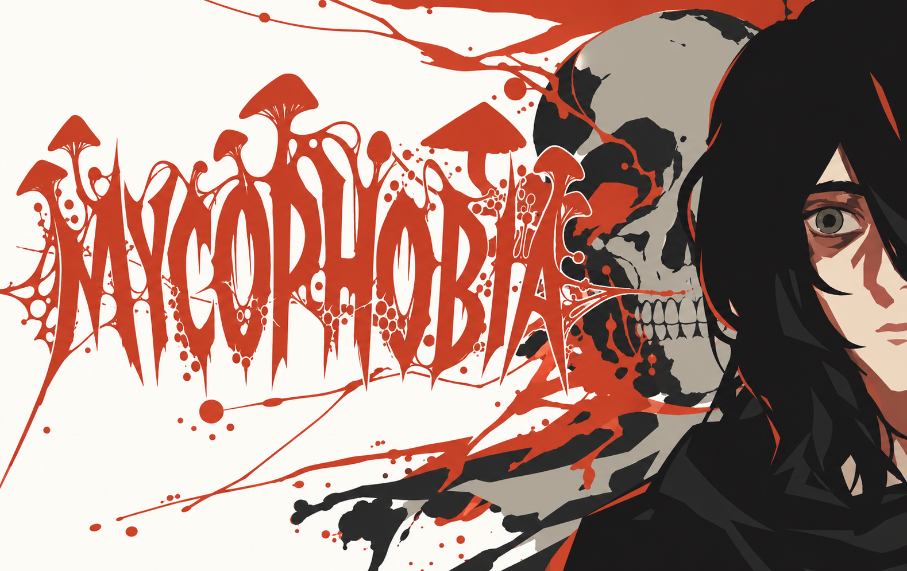

JAM FILE 01 // KEY ART
MYCOPHOBIA
Mycophobia is a short horror adventure / puzzle game set in the Mycelium Underground Village. Dr. Theo Donovan’s experiments with a rare mushroom have infected the village, and the player has to uncover the truth before the infection spreads.
KEY ARTHORRORGRAPHIC DESIGN
- FOCUS
- World mood / poster direction
- DELIVERABLE
- Promotional key visual
- JAM
- SCREAM JAM 2026
- PLATFORM
- WINDOWS / MACOS / LINUX
Team project by etherstep, adoradez, Gejang, Mursupaani, Asher, and Saukkoman.